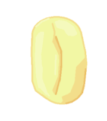
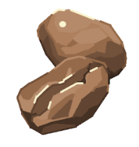

types de grains

cafe vert
Placer le filtre Chemex, verser un peu d’eau chaude pour qu’il se cole au vers. Ajouter du café au filtre et de l’eau chaude. Attendre entre 3.5 - 4.5 minutes. Enlever le filtre

cafe pergamino
En supposant qu'elle soit déjà calibrée, versez le café du moulin dans le porte-filtre, tassez le café avec le tamper. Insérez le porte-filtre dans la tête de groupe et appuyez sur le bouton pour faire un expresso. Mettez la tasse sous le porte-filtre.

cafe tostee
Remplissez la partie inférieure avec de l'eau, placez le café moulu dans le filtre, fermez le pot moka et faites-le chauffer sur une cuisinière. Lorsque le café remplit la partie supérieure, retirez du feu et mouillez l'extérieur inférieur du pot moka avec eau en même temps pot (le café sera meilleur comme ça)